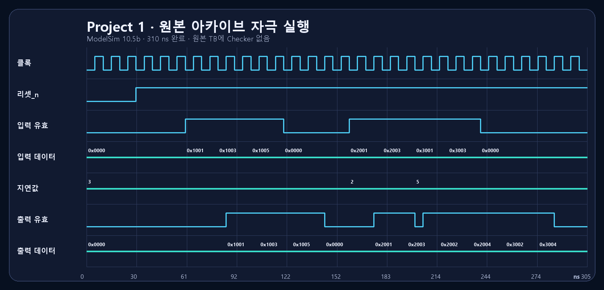
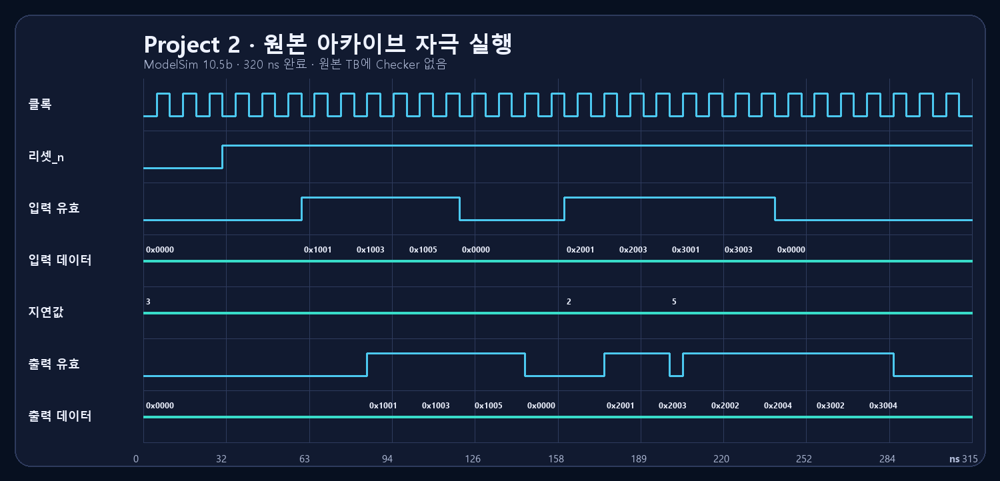
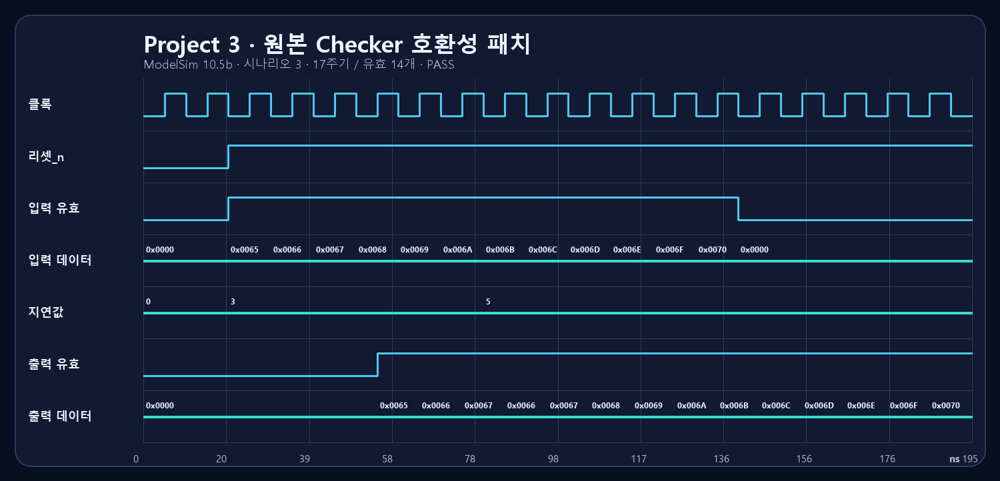

시프트 레지스터
데이터와 valid를 같은 깊이로 이동시키고 iDelay-1 탭을 선택합니다.
동일한 지연 규약을 시프트 레지스터, 순환 큐, 메모리 기반 DUT로 전개했습니다. 원본 ZIP을 ModelSim으로 재실행하고, Icarus self-check와 Quartus 24.3 합성·Fit·Timing·Power raw report까지 함께 공개합니다.
Project 1은 데이터/valid 정렬을, Project 2는 전체 stage 이동을 한 슬롯 갱신으로 바꾸는 확장성을, Project 3은 파일 기반 반복 검증과 결정적 오류 보고를 다룹니다.

데이터와 valid를 같은 깊이로 이동시키고 iDelay-1 탭을 선택합니다.
(write_ptr-iDelay) mod DEPTH 주소와 한 슬롯 쓰기로 동일 동작을 구현합니다.
Input Driver, DUT, Output Checker를 분리하고 데이터·valid·출력 개수를 비교합니다.
3 시나리오 PASS세 프로젝트의 강의 PDF 5페이지를 분석한 뒤, 원본 슬라이드 캡처 없이 저장소 RTL·테스트벤치와 대조해 8종 구조도를 새로 그렸습니다. 각 그림은 SVG 원본과 PNG fallback을 함께 제공합니다.

iDelay=N → tap[N-1]


모든 저장 구조는 데이터와 valid를 하나의 transaction으로 취급합니다. 메모리형 구현은 data array를 리셋하지 않고 valid state로 stale data의 관측을 막습니다.


아래 그림은 예상 파형이 아닙니다. RTL/TB를 Icarus Verilog 13.0으로 실행해 생성한 VCD에서 직접 렌더링했습니다.


원본 Project 1·2 TB는 입력 자극만 있고 assertion/scoreboard가 없습니다. 따라서 아래 ModelSim 실행은 PASS가 아니라 컴파일 및 자극 완료 증거입니다. Project 3는 원본 실패와 인스턴스명 1줄 호환성 패치 후 PASS를 모두 보존했습니다.



발견된 원본 결함. Project 3의 checker 인스턴스명은 SystemVerilog 예약어라 원본 배치가 컴파일에 실패합니다. 또한 배치파일은 이 실패를 종료코드 0과 “completed” 문구로 가립니다. 원본 해시·실패 로그·패치 경계 보기
PASS는 checker가 있는 실제 실행에만 표시합니다. 원본 stimulus-only TB, 보완 self-check, Quartus 합성·Fit 결과는 서로 다른 증거 층으로 유지합니다.
| Project | RTL | Simulation | Synthesis | PPA |
|---|---|---|---|---|
| 1 · Shift Register | 검토 완료 | PASS Icarus 13.0 · 20 checks |
SUCCESS Quartus 24.3.1 · 85 ALM estimate |
N/A |
| 2 · Circular Queue | 검토 완료 | PASS 두 구현 + 참조 모델 · 26 checks |
SUCCESS 4개 Fit 완료 |
COMPLETE Timing + Power raw report |
| 3 · Memory DV | 검토 완료 | PASS 시나리오 1–3 · Checker + Test PASS |
SUCCESSaltdpram LUTRAM 추론 |
N/A |
Agilex 5, 100 MHz, BALANCED, virtual pin, 고정 12.5% toggle 조건으로 DEPTH 10/100의 Shift Register와 Circular Queue를 합성·배치배선했습니다.


| Architecture | DEPTH | ALM | Registers | Restricted Fmax | Setup slack | Dynamic power |
|---|---|---|---|---|---|---|
| Shift Register | 10 | 113 | 175 | 554.02 MHz | 9.098 ns | 0.737 W |
| Circular Queue | 10 | 162 | 178 | 536.48 MHz | 8.136 ns | 0.737 W |
| Shift Register | 100 | 925 | 1851 | 554.02 MHz | 8.800 ns | 0.742 W |
| Circular Queue | 100 | 1106 | 1714 | 343.05 MHz | 7.085 ns | 0.744 W |
핵심 해석. DEPTH 100 Queue는 register를 7.4% 줄였지만 ALM은 19.6% 늘고 제한 Fmax는 38.1% 낮았습니다. 두 Queue 모두 RAM block 0개로, 현재 비동기 indexed-read RTL은 RAM 추론 이점을 얻지 못했습니다. 전력값은 Low-confidence 고정 활동률 추정이며 보드 실측이 아닙니다.